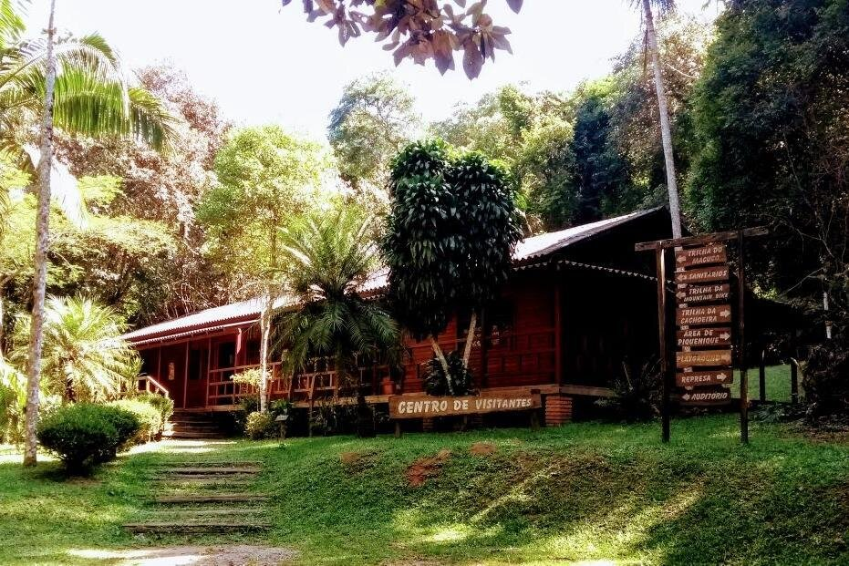
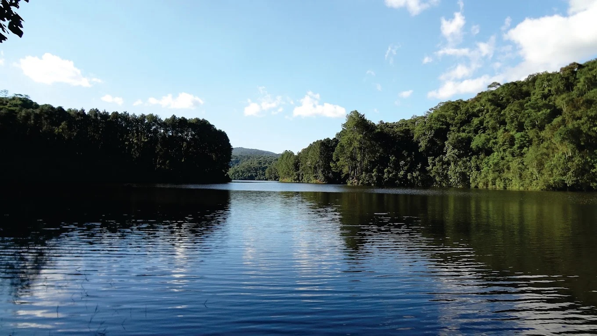
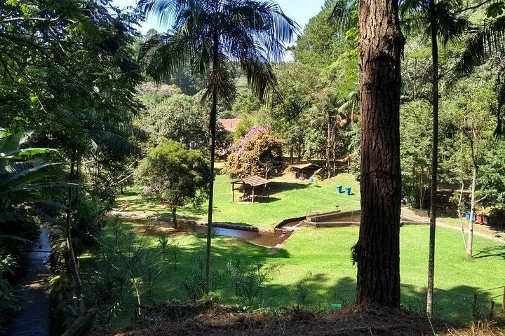

Produtos e Serviços

01. EcoStopover
Experiência express de meio período desenvolvida especialmente para passageiros com conexões de média/longa duração no Aeroporto Internacional de Guarulhos (GRU). Inclui recepção, transporte dedicado e seguro, caminhada leve de reconexão no Núcleo Cabuçu e degustação gastronômica regional.

02. Imersão Cantareira & Cabuçu
Caminhada guiada de interpretação ambiental na Mata Atlântica, visita à histórica Barragem do Cabuçu (concluída em 1913 - patrimônio do saneamento de SP) e banho de cachoeira renovador, acompanhado por biólogos e guias credenciados pelo CADASTUR.

03. Cicloturismo & Rota dos Orgânicos
Passeio de mountain bike e e-bikes pelas estradas cênicas rurais do Norte de Guarulhos. O percurso conecta trilhas em meio à floresta até a propriedade de pequenos produtores orgânicos locais para um autêntico café da manhã colonial e vivência agroecológica.

04. Trilha Histórica de Bonsucesso
Roteiro cultural e patrimonial que resgata as origens do povoamento de Guarulhos, a história do centenário Bairro de Bonsucesso, tradições da cultura afro-brasileira e manifestações populares históricas, como a tradicional Festa de Bonsucesso.